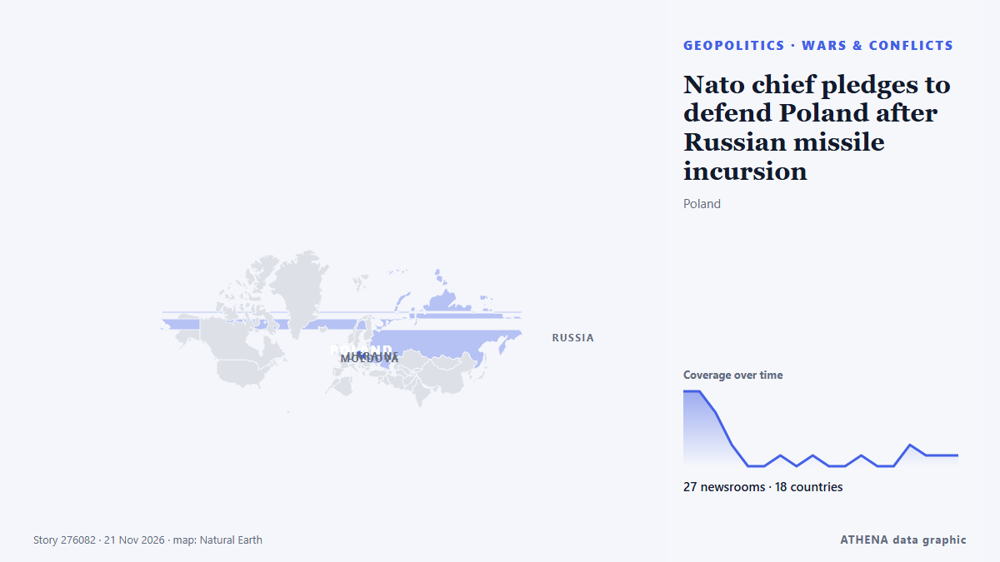

Nato chief pledges to defend Poland after Russian missile incursion

Warsaw accused Russia of provocation after two missiles struck southeastern Poland near the site of major European military exercises. from Free Malaysia Today
What changed 9 new reports from 9 outlets in the last 24 hours.
See the sources ›Evidence: Strong
Reported independently by 30 outlets in 21 countries since 20 Nov, first by Politico Europe; coverage is fading. ATHENA rates the risk elevated (5.8/10), driven mainly by the severity of the harm described and its geographic and sector reach. Confidence is 93% (high), with 30 independent outlets corroborating it and an average source reliability of 76%. Outlets by country: Ukraine (4), United States (4), Belgium (3). Coverage: 20 Nov to 22 Nov, 46 hours.
Why it matters: Russia's full-scale invasion of Ukraine began in February 2022. This tracker follows the fighting, strikes on infrastructure and the diplomacy around the war, as covered by outlets around the world.
What changed: 9 new reports from 9 outlets in the 24 hours to 22 Nov.
First reported as: Russian missile strike in Poland ‘utterly unacceptable’, Andy Burnham says
AutomatedSelected, grouped and scored by ATHENA's published method from 29 independent outlets. The headline is the outlet's own; ATHENA's sentences follow fixed patterns - no generative AI writes them. How it works →
How to read this page
- What you are reading
- 30 outlets in 21 countries reported this event. The reports below are listed in the order they appeared; each headline opens the original article. ATHENA writes none of the reports.
- Our reading
- Under watch — The reports describe action, or a decision still to be taken, between states or armed groups. ATHENA follows what happens next. We look for four kinds of development: nothing further, an open action that someone claims, an action through others or without a claim, and an accident or misreading. We do not predict which will happen.
- How much evidence
- Strong Many independent outlets in many countries describe the same event.
After repeats, off-topic items and stale reports are removed, 27 of the 32 listed reports are counted; 100% of the headlines match the event.
- What this does not mean
- ATHENA measures how an event is reported, not whether it is true. This is not a forecast, a judgement on who is right, or advice.
- What would change it
- Reports from other independent outlets showing a different development, or a firm confirmation or denial from an official source.
Reading R2 · refreshed with every update of this page. ATHENA has not yet published a track record for these readings; when it does, it will be linked here.
At a glance
Selected, scored and written by ATHENA's published methodology. No editor intervenes in individual events. How this is produced ›
| 20 Nov 12:43 UTC | 7 |
|---|---|
| 20 Nov 14:43 UTC | 7 |
| 20 Nov 16:43 UTC | 5 |
| 20 Nov 18:43 UTC | 2 |
| 20 Nov 20:43 UTC | 0 |
| 20 Nov 22:43 UTC | 0 |
| 21 Nov 00:43 UTC | 1 |
| 21 Nov 02:43 UTC | 0 |
| 21 Nov 04:43 UTC | 1 |
| 21 Nov 06:43 UTC | 0 |
| 21 Nov 08:43 UTC | 0 |
| 21 Nov 10:43 UTC | 1 |
| 21 Nov 12:43 UTC | 1 |
| 21 Nov 14:43 UTC | 0 |
| 21 Nov 16:43 UTC | 2 |
| 21 Nov 18:43 UTC | 1 |
| 21 Nov 20:43 UTC | 1 |
| 21 Nov 22:43 UTC | 1 |
| 22 Nov 00:43 UTC | 0 |
| 22 Nov 02:43 UTC | 0 |
| 22 Nov 04:43 UTC | 0 |
| 22 Nov 06:43 UTC | 1 |
| 22 Nov 08:43 UTC | 0 |
| 22 Nov 10:43 UTC | 1 |
| 20 Nov 14:25 UTC | 3.9 |
|---|---|
| 20 Nov 16:03 UTC | 5.0 |
| 20 Nov 19:50 UTC | 5.8 |
| 22 Nov 10:47 UTC | 5.8 |
Why these numbers
Importance
How widely and how prominently the story is reported.
Risk
What the reports describe, scored for possible harm. It is not a forecast.
Confidence
How well independent outlets support the story.
The reporting — who reported it, and when
headline as published · opens the original- Politico Europe · BelgiumTusk: Russian cruise missile incursion into Poland seems ‘intentional’
- Kyiv Post · UkraineRussian Kh-101 Missiles Crash Near Training Coalition Troops in Poland
- Novinite · BulgariaPoland Seeks NATO Reinforcements After Russian Missiles and Drone Hit Its Territory
- Al Jazeera English · QatarPoland hit by at least one Russian missile, says Polish govt
- APA (English) · AzerbaijanPolish PM: Russian cruise missile incursion into Poland seems ‘intentional’
- Evening Standard (London) · United KingdomRussian missile strike in Poland ‘utterly unacceptable’, Andy Burnham says
- Euractiv · BelgiumPoland seeks more NATO support after Russian missile incursion
- Times of India · IndiaRussia's war spills into Poland as missile crashes near Ukraine border
- RTÉ News (World) · IrelandLeaders offer support after Warsaw missile incident
- Sydney Morning Herald · AustraliaPoland says Russian missile that crashed in its territory was ‘intentional provocation’
- CBS News (World) · United StatesRussian missiles pummel Ukraine and hit NATO soil in Poland
- UPI World News · United StatesRussian missiles hit Poland amid military exercise
- Kyiv Post · UkraineTrump Downplays Russian Incursions Hours Before Missiles Crash in Poland
- The Guardian · United KingdomRussian missiles and drone hit Poland during attacks on Ukraine
- Ukrinform (English) · UkraineTrump claims Putin sent drones and ‘little missiles’ into Poland by mistake
- Daily Mirror · Sri LankaPoland says Russian missile hit its territory during attack on Ukraine
- Bangkok Post — page reader · ThailandWarsaw says Russian missiles hit Poland
- Meduza (English) · RussiaPoland issues air raid alerts as Russia attacks Ukraine. Poland’s defense minister says two Russian missiles and a drone fell on Polish soil.
- Stuff · New ZealandThe moment Russian missile hits Poland during military drills
- The Independent · United KingdomEuropean leaders condemn Russia’s ‘intentional provocation’ as missile hits Poland
- EUobserver · BelgiumRussian missiles over Poland, European troops in the mud: Ukraine’s defence force is taking shape
- Defense One · United StatesEuropeans, with Ukraine’s help, brace for more Russian attacks
- Mainichi (English) · JapanRussian missiles land in Poland, as Europe held military drills nearby. NATO calls it a violation
- Al Jazeera English · QatarRussian missiles hit Poland: What happened, and could NATO respond?
- France 24 English · FranceRussia tests NATO’s eastern defences
- Asharq Al-Awsat (English) · Saudi ArabiaNATO Chief Pledges to Defend Poland after Russian Missile Incursion
- UPI World News · United StatesTrump: 'Little' missiles in Poland 'a mistake;' PM Tusk disagrees
- Punch · NigeriaNATO pledges to defend Poland after Russian missile incursion
- Free Malaysia Today · MalaysiaNato chief pledges to defend Poland after Russian missile incursion
- Kyiv Independent · UkraineMoldova, Finland report Russian airspace violations day after suspected Russian missiles flew into Poland
- The Business Standard (Bangladesh) (working feed) · BangladeshRussian missiles hit Poland: What happened, and could Nato respond?
- Türkiye Today · TurkeyEuropean troops train for Ukraine mission as Russian missile hits Poland